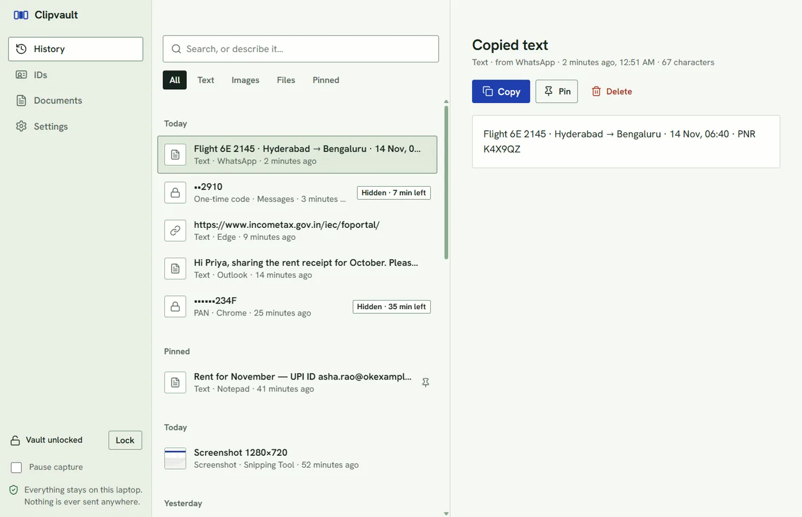
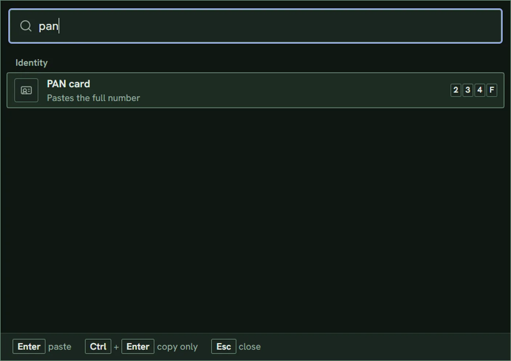
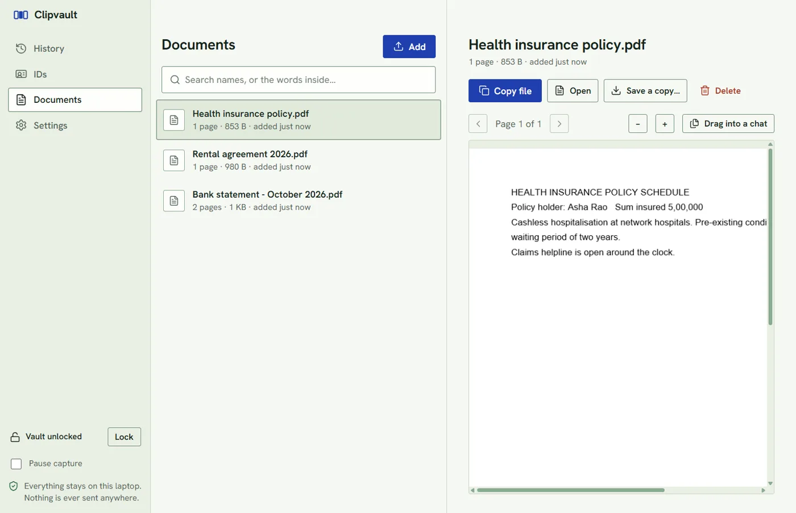

Every copy, kept
Text, screenshots and files, saved as you copy them, with nothing skipped even when you copy fast. Pin what matters, delete with undo, pause any time.
Clipvault remembers everything you copy, types what you say into any app, and keeps your Aadhaar, PAN and documents two keystrokes away. Everything stays on your Windows laptop.
Free and open source · Windows 10 and 11 · No account, no cloud
Works wherever you type
Everything in one place
Not just your last 25 copies. Every copy, every screenshot, every file, kept encrypted and found in a moment.
Text, screenshots and files, saved as you copy them, with nothing skipped even when you copy fast. Pin what matters, delete with undo, pause any time.
Press Ctrl Shift V anywhere, type a few letters, press Enter. It pastes into the program you were in.
Hold Ctrl Shift Space, talk, let go. Your words appear in any app, with the "um"s taken out.
Ask for "when does my plane leave for Bangalore" and find the flight booking, even though they share no words.
Aadhaar, PAN, licence, passport and bank details. Hidden until you ask, checked as you type, cleared from the clipboard after 30 seconds.
A made-up number. Press Show or Copy.
Import PDFs and photos, search inside them, and drag them straight into a chat or an email.
Voice typing
Speaking is about three times faster than typing. Hold the shortcut in any app, say what you mean, and let go. Speech recognition runs on your own laptop, so the audio is never saved or sent anywhere.
To priya@example.com
Subject Friday
A demo with a recorded sample, so your microphone is not used. In the app it is your own voice.
What you said
What it typed
How it works
Clipvault sits in the tray and saves each copy as it happens.
Results from the app's own search on a made-up history. The first and third share no words with what they find.
Privacy, automatic
One-time codes, Aadhaar, PAN, card numbers and API keys are spotted, masked, and removed from history on their own. Edit the note and watch.
Everything else is kept as written and searchable.
Built to stay on your laptop
The app blocks every network request. The search and speech models ship inside the installer.
Every item, image and document is encrypted, with keys sealed to your Windows account.
The vault locks after five minutes and whenever you lock Windows.
Copied IDs clear from the clipboard after 30 seconds and are kept out of Windows' own clipboard history.
Copies from 1Password, Bitwarden or KeePass are never saved. Add any program you like.
The microphone opens while you hold the shortcut and closes when you let go. Audio is never written to disk.
The numbers
0%
of exact fragments came back first
0%
of reworded questions found in the top three
0
network requests, ever
24 made-up clipboard items, each asked two ways. Tuned on the same set, so read it as a check, not a benchmark. Unrelated questions returned nothing.
The real app



Questions
Yes. Clipvault is open source under the MIT licence. There is no account, no subscription and no paid tier.
No. Speech is turned into text by a Whisper model that runs on your laptop, inside the app. The app blocks all network access, and the audio is never written to disk.
English for now. The model is the English-only Whisper, chosen because it is fast and accurate on a normal laptop.
Capturing your clipboard costs next to nothing. The speech model loads the first time you dictate and needs a few hundred MB of memory; you can turn dictation off in Settings.
It cannot be recovered, by design. Export an encrypted backup from Settings and keep it somewhere safe.
Not yet. There is no OCR, so scans are found by their name. PDFs with real text are searchable inside.
Windows 10 or 11, 64-bit. The installer carries everything, including the search and speech models, so there is nothing to sign in to and nothing to download afterwards.
Build the installer on your own computer. It takes a few minutes and needs Node.js.
Clipvault is not code-signed yet, so your browser and Windows say they do not know the publisher. That is the whole reason for the warning.
The code is public, so you can read it, check the SHA-256 on the release page, or build the installer yourself with the commands below.
npm install
npm run dist